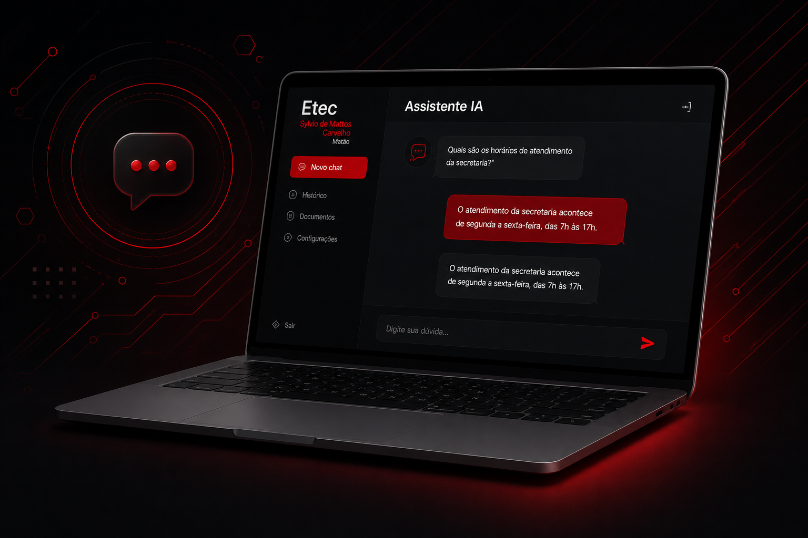

Foco no aluno
Respostas claras para dúvidas acadêmicas e administrativas

Um assistente inteligente que responde perguntas acadêmicas, orienta alunos e facilita o atendimento da secretaria escolar.
Nossa IA foi desenvolvida para transformar o atendimento da secretaria, oferecendo respostas rápidas e precisas com base em documentos e regras da instituição.
Respostas claras para dúvidas acadêmicas e administrativas
Base de conhecimento confiável com dados da instituição.
Disponível para ajudar sempre que você precisa.
Redução do tempo de espera e mais eficiência no atendimento.

Acesse o sistema com o seu e-mail institucional ou conta Google.
Escreva sua pergunta de forma natural no chat da IA.
Obtenha respostas precisas e instantâneas em segundos.
Consulte documentos institucionais de forma rápida e inteligente.
Atendimento e eventos sempre atualizados.
Respostas sobre matrículas, cursos, regras e muito mais.
Respostas para dúvidas mais comuns de alunos e responsáveis.
Menos espera, mais agilidade no seu dia a dia.
Acesse agora o sistema e tenha
a secretaria sempre com você.